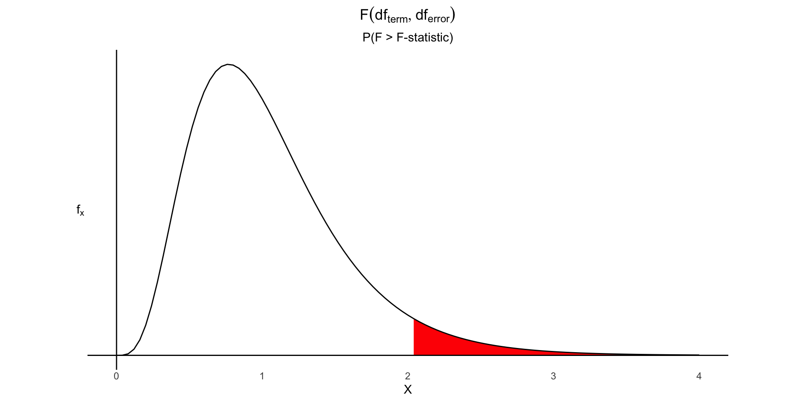
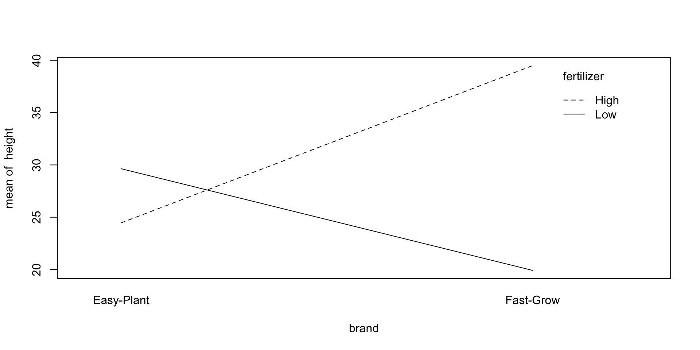
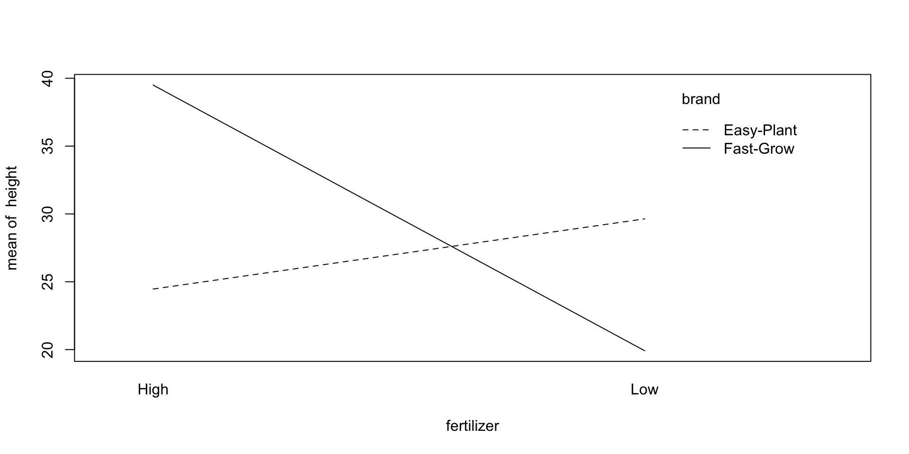
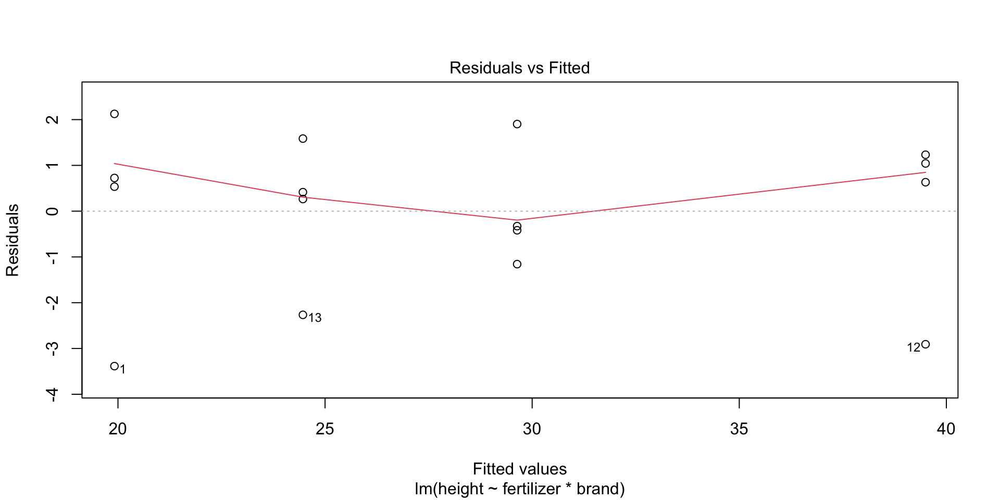
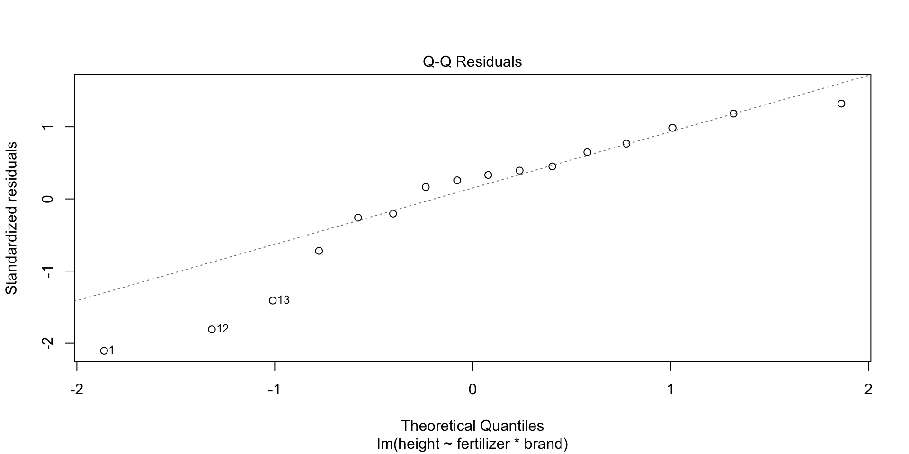
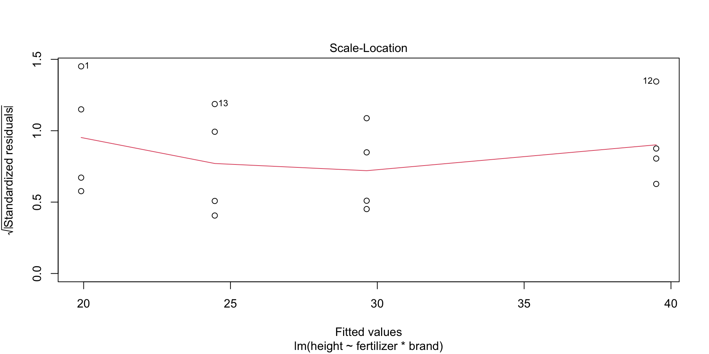
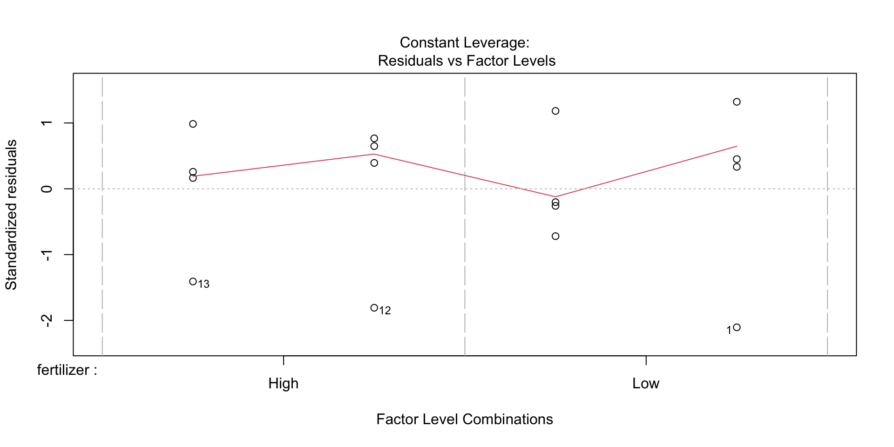
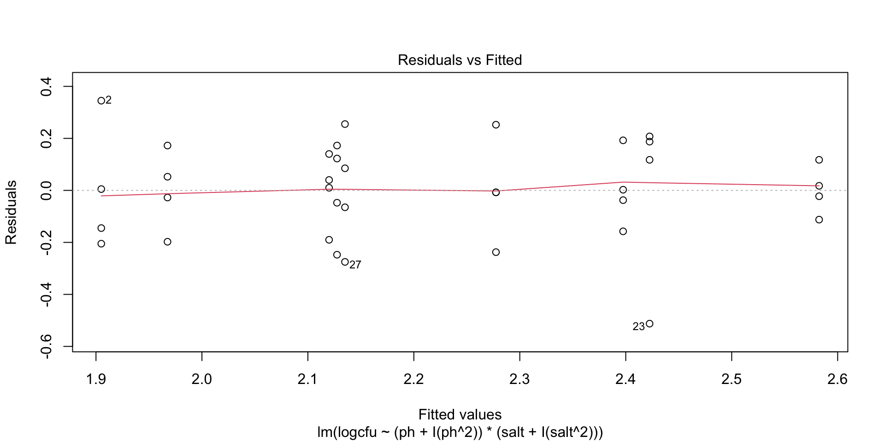
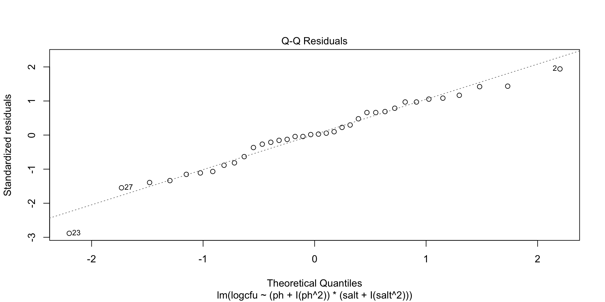
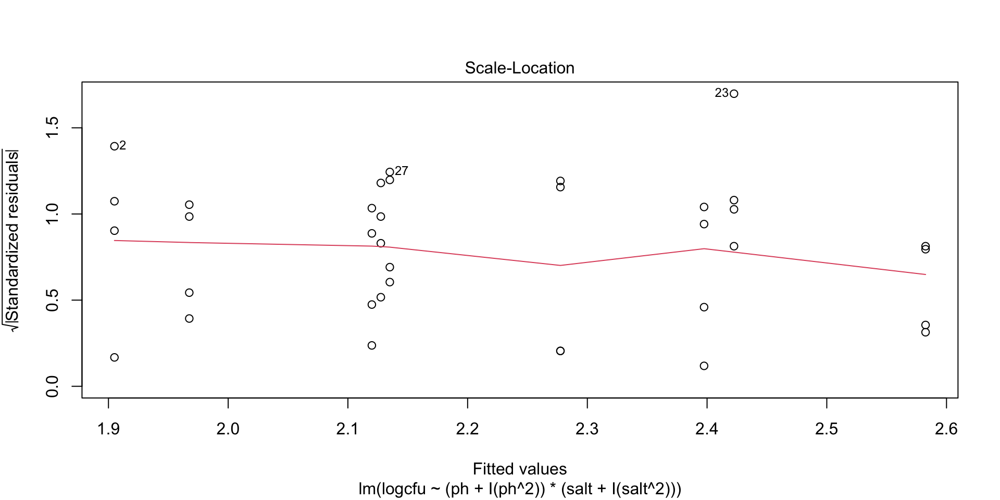

What is ANOVA?
When to use two-way ANOVA?
Let A and B represent two factors. A has levels \(i=1\dots a\) and B has levels \(j=1\dots b\), and there are \(k=1\dots r\) replications. The model is given by:
\[ Y_{ijk}=\mu + A_i+B_j+(AB)_{ij}+\epsilon_{ijk} \]
Where
Assumptions
| Source | Sum of Squares | df | Mean Square | |
|---|---|---|---|---|
| Factor A | \(rb\sum_{i=1}^a(\bar{Y}_{i\cdot\cdot}-\bar{Y}_{\cdot\cdot\cdot})^2\) | \(a-1\) | \(MS_A=\frac{SS_A}{(a-1)}\) | |
| Factor B | \(ra\sum_{j=1}^b(\bar{Y}_{\cdot j\cdot}-\bar{Y}_{\cdot\cdot\cdot})^2\) | \(b-1\) | \(MS_B=\frac{SS_B}{(b-1)}\) | |
| Interaction (A x B) | \(r\sum_{i=1}^a\sum_{j=1}^b(\bar{Y}_{ij\cdot}-\bar{Y}_{i\cdot\cdot}-\bar{Y}_{\cdot j\cdot}+\bar{Y}_{\cdot\cdot\cdot})^2\) | \((a-1)(b-1)\) | \(MS_{AB}=\frac{SS_{AB}}{(a-1)(b-1)}\) | |
| Error | \(\sum_{i=1}^a\sum_{j=1}^b\sum_{k=1}^r(Y_{ijk}-\bar{Y}_{ij\cdot})^2\) | \(ab(r-1)\) | \(MS_E=\frac{SS_E}{ab(r-1)}\) | |
| Total | \(\sum_{i=1}^a\sum_{j=1}^b\sum_{k=1}^r(Y_{ijk}-\bar{Y}_{\cdot\cdot\cdot})^2\) | \(abr-1\) |
p-values are calculated by taking the probability of observing the F-statistic or larger values from an F-distribution.
To compute the F-statistic, take the mean square for the term of interest and divide by MSE. Under \(H_0\), this will follow an F-distribution with numerator degrees of freedom for the term of interest and denominator degrees of freedom for the error term.

Calculation of p-value under an F distribution.
An experiment was conducted to measure the effect of fertilizer on the growth height of a plant. Researchers used two brands of fertilizers (Easy-Plant and Fast-Grow) with two quantities (low and high). Each combination of fertilizer brand and quantity were applied to individual pots of plants, measuring the plant height after a set growing period.
The interaction term of our model is not always required. To visualize whether this term is needed, we can create interaction plots. These are created by plotting the mean of each treatment combination against one treatment variable, and distinguishing the other treatment variable in the plot.


Call:
lm(formula = height ~ fertilizer * brand, data = agriculture)
Coefficients:
(Intercept) fertilizerLow
24.465 5.173
brandFast-Grow fertilizerLow:brandFast-Grow
15.033 -24.755
Call:
lm(formula = height ~ fertilizer * brand, data = agriculture)
Residuals:
Min 1Q Median 3Q Max
-3.3850 -0.6025 0.4750 1.0900 2.1250
Coefficients:
Estimate Std. Error t value Pr(>|t|)
(Intercept) 24.4650 0.9284 26.35 5.46e-12 ***
fertilizerLow 5.1725 1.3129 3.94 0.00196 **
brandFast-Grow 15.0325 1.3129 11.45 8.15e-08 ***
fertilizerLow:brandFast-Grow -24.7550 1.8568 -13.33 1.48e-08 ***
---
Signif. codes: 0 '***' 0.001 '**' 0.01 '*' 0.05 '.' 0.1 ' ' 1
Residual standard error: 1.857 on 12 degrees of freedom
Multiple R-squared: 0.9535, Adjusted R-squared: 0.9419
F-statistic: 82.05 on 3 and 12 DF, p-value: 2.899e-08Analysis of Variance Table
Response: height
Df Sum Sq Mean Sq F value Pr(>F)
fertilizer 1 207.65 207.65 60.2301 5.123e-06 ***
brand 1 28.20 28.20 8.1785 0.01436 *
fertilizer:brand 1 612.81 612.81 177.7508 1.484e-08 ***
Residuals 12 41.37 3.45
---
Signif. codes: 0 '***' 0.001 '**' 0.01 '*' 0.05 '.' 0.1 ' ' 1Anova Table (Type III tests)
Response: height
Sum Sq Df F value Pr(>F)
(Intercept) 2394.14 1 694.442 5.459e-12 ***
fertilizer 53.51 1 15.521 0.001964 **
brand 451.95 1 131.093 8.145e-08 ***
fertilizer:brand 612.81 1 177.751 1.484e-08 ***
Residuals 41.37 12
---
Signif. codes: 0 '***' 0.001 '**' 0.01 '*' 0.05 '.' 0.1 ' ' 1The interaction term was significant, so we should only consider differences at each treatment combination.
brand fertilizer emmean SE df lower.CL upper.CL
Easy-Plant High 24.5 0.928 12 22.4 26.5
Fast-Grow High 39.5 0.928 12 37.5 41.5
Easy-Plant Low 29.6 0.928 12 27.6 31.7
Fast-Grow Low 19.9 0.928 12 17.9 21.9
Confidence level used: 0.95 brand = Easy-Plant:
fertilizer emmean SE df lower.CL upper.CL
High 24.5 0.928 12 22.4 26.5
Low 29.6 0.928 12 27.6 31.7
brand = Fast-Grow:
fertilizer emmean SE df lower.CL upper.CL
High 39.5 0.928 12 37.5 41.5
Low 19.9 0.928 12 17.9 21.9
Confidence level used: 0.95 contrast estimate SE df t.ratio p.value
(Easy-Plant High) - (Fast-Grow High) -15.03 1.31 12 -11.450 <0.0001
(Easy-Plant High) - (Easy-Plant Low) -5.17 1.31 12 -3.940 0.0092
(Easy-Plant High) - (Fast-Grow Low) 4.55 1.31 12 3.466 0.0210
(Fast-Grow High) - (Easy-Plant Low) 9.86 1.31 12 7.510 <0.0001
(Fast-Grow High) - (Fast-Grow Low) 19.58 1.31 12 14.915 <0.0001
(Easy-Plant Low) - (Fast-Grow Low) 9.72 1.31 12 7.405 <0.0001
P value adjustment: tukey method for comparing a family of 4 estimates contrast estimate SE df lower.CL upper.CL
(Easy-Plant High) - (Fast-Grow High) -15.03 1.31 12 -18.930 -11.13
(Easy-Plant High) - (Easy-Plant Low) -5.17 1.31 12 -9.070 -1.27
(Easy-Plant High) - (Fast-Grow Low) 4.55 1.31 12 0.652 8.45
(Fast-Grow High) - (Easy-Plant Low) 9.86 1.31 12 5.962 13.76
(Fast-Grow High) - (Fast-Grow Low) 19.58 1.31 12 15.685 23.48
(Easy-Plant Low) - (Fast-Grow Low) 9.72 1.31 12 5.825 13.62
t.ratio p.value
-11.450 <0.0001
-3.940 0.0092
3.466 0.0210
7.510 <0.0001
14.915 <0.0001
7.405 <0.0001
Confidence level used: 0.95
Conf-level adjustment: tukey method for comparing a family of 4 estimates
P value adjustment: tukey method for comparing a family of 4 estimates 



An experiment was conducted to measure the effect of pH and salt concentration on bacteria growth. Bacteria were placed into Petri dishes and were given a solution that consisted of a pH and salt concentration combination. pH levels were set at levels of 6, 7, and 8, and salt concentration levels were set at 15%, 20%, and 25%. After a set amount of time, the bacteria growth was measured by log CFU (colony forming unit).
Option 1: categorical factors
Option 2: quantitative factors
Note: You can get the same results from both models using polynomial orthogonal contrasts.
Call:
lm(formula = logcfu ~ (ph + I(ph^2)) * (salt + I(salt^2)), data = bacteria)
Residuals:
Min 1Q Median 3Q Max
-0.51250 -0.12062 0.00375 0.12688 0.34500
Coefficients:
Estimate Std. Error t value Pr(>|t|)
(Intercept) 131.722500 115.843558 1.137 0.265
ph -37.890000 33.464837 -1.132 0.267
I(ph^2) 2.720000 2.388315 1.139 0.265
salt -14.499250 11.978762 -1.210 0.237
I(salt^2) 0.365250 0.298692 1.223 0.232
ph:salt 4.223750 3.460420 1.221 0.233
ph:I(salt^2) -0.106450 0.086286 -1.234 0.228
I(ph^2):salt -0.302750 0.246963 -1.226 0.231
I(ph^2):I(salt^2) 0.007650 0.006158 1.242 0.225
Residual standard error: 0.2053 on 27 degrees of freedom
Multiple R-squared: 0.5819, Adjusted R-squared: 0.458
F-statistic: 4.696 on 8 and 27 DF, p-value: 0.001094Analysis of Variance Table
Response: logcfu
Df Sum Sq Mean Sq F value Pr(>F)
ph 1 0.66002 0.66002 15.6643 0.0004948 ***
I(ph^2) 1 0.17405 0.17405 4.1308 0.0520539 .
salt 1 0.63050 0.63050 14.9638 0.0006264 ***
I(salt^2) 1 0.00001 0.00001 0.0003 0.9863846
ph:salt 1 0.05062 0.05062 1.2015 0.2827051
ph:I(salt^2) 1 0.00141 0.00141 0.0334 0.8563030
I(ph^2):salt 1 0.00141 0.00141 0.0334 0.8563030
I(ph^2):I(salt^2) 1 0.06503 0.06503 1.5432 0.2248173
Residuals 27 1.13765 0.04214
---
Signif. codes: 0 '***' 0.001 '**' 0.01 '*' 0.05 '.' 0.1 ' ' 1 ph salt emmean SE df lower.CL upper.CL
7 20 2.4 0.103 27 2.19 2.61
Confidence level used: 0.95 What happened here??
ph salt emmean SE df lower.CL upper.CL
6 15 1.91 0.103 27 1.69 2.12
7 15 2.12 0.103 27 1.91 2.33
8 15 2.13 0.103 27 1.92 2.35
6 20 1.97 0.103 27 1.76 2.18
7 20 2.40 0.103 27 2.19 2.61
8 20 2.28 0.103 27 2.07 2.49
6 25 2.13 0.103 27 1.92 2.34
7 25 2.42 0.103 27 2.21 2.63
8 25 2.58 0.103 27 2.37 2.79
Confidence level used: 0.95 contrast estimate SE df t.ratio p.value
ph6 salt15 - ph7 salt15 -0.2150 0.145 27 -1.481 0.8544
ph6 salt15 - ph8 salt15 -0.2300 0.145 27 -1.585 0.8046
ph6 salt15 - ph6 salt20 -0.0625 0.145 27 -0.431 1.0000
ph6 salt15 - ph7 salt20 -0.4925 0.145 27 -3.393 0.0469
ph6 salt15 - ph8 salt20 -0.3725 0.145 27 -2.566 0.2464
ph6 salt15 - ph6 salt25 -0.2225 0.145 27 -1.533 0.8304
ph6 salt15 - ph7 salt25 -0.5175 0.145 27 -3.565 0.0317
ph6 salt15 - ph8 salt25 -0.6775 0.145 27 -4.668 0.0021
ph7 salt15 - ph8 salt15 -0.0150 0.145 27 -0.103 1.0000
ph7 salt15 - ph6 salt20 0.1525 0.145 27 1.051 0.9766
ph7 salt15 - ph7 salt20 -0.2775 0.145 27 -1.912 0.6120
ph7 salt15 - ph8 salt20 -0.1575 0.145 27 -1.085 0.9716
ph7 salt15 - ph6 salt25 -0.0075 0.145 27 -0.052 1.0000
ph7 salt15 - ph7 salt25 -0.3025 0.145 27 -2.084 0.5035
ph7 salt15 - ph8 salt25 -0.4625 0.145 27 -3.186 0.0739
ph8 salt15 - ph6 salt20 0.1675 0.145 27 1.154 0.9595
ph8 salt15 - ph7 salt20 -0.2625 0.145 27 -1.809 0.6765
ph8 salt15 - ph8 salt20 -0.1425 0.145 27 -0.982 0.9845
ph8 salt15 - ph6 salt25 0.0075 0.145 27 0.052 1.0000
ph8 salt15 - ph7 salt25 -0.2875 0.145 27 -1.981 0.5684
ph8 salt15 - ph8 salt25 -0.4475 0.145 27 -3.083 0.0919
ph6 salt20 - ph7 salt20 -0.4300 0.145 27 -2.963 0.1176
ph6 salt20 - ph8 salt20 -0.3100 0.145 27 -2.136 0.4718
ph6 salt20 - ph6 salt25 -0.1600 0.145 27 -1.102 0.9689
ph6 salt20 - ph7 salt25 -0.4550 0.145 27 -3.135 0.0824
ph6 salt20 - ph8 salt25 -0.6150 0.145 27 -4.237 0.0062
ph7 salt20 - ph8 salt20 0.1200 0.145 27 0.827 0.9949
ph7 salt20 - ph6 salt25 0.2700 0.145 27 1.860 0.6445
ph7 salt20 - ph7 salt25 -0.0250 0.145 27 -0.172 1.0000
ph7 salt20 - ph8 salt25 -0.1850 0.145 27 -1.275 0.9303
ph8 salt20 - ph6 salt25 0.1500 0.145 27 1.033 0.9788
ph8 salt20 - ph7 salt25 -0.1450 0.145 27 -0.999 0.9828
ph8 salt20 - ph8 salt25 -0.3050 0.145 27 -2.101 0.4929
ph6 salt25 - ph7 salt25 -0.2950 0.145 27 -2.032 0.5358
ph6 salt25 - ph8 salt25 -0.4550 0.145 27 -3.135 0.0824
ph7 salt25 - ph8 salt25 -0.1600 0.145 27 -1.102 0.9689
P value adjustment: tukey method for comparing a family of 9 estimates 


STAT 801A